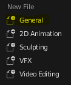
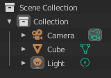
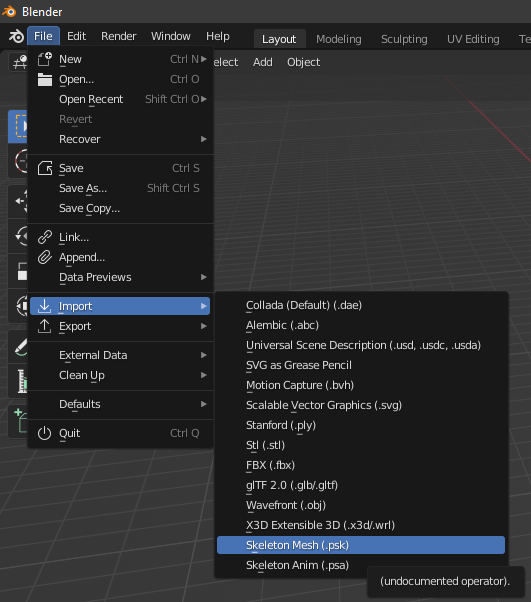
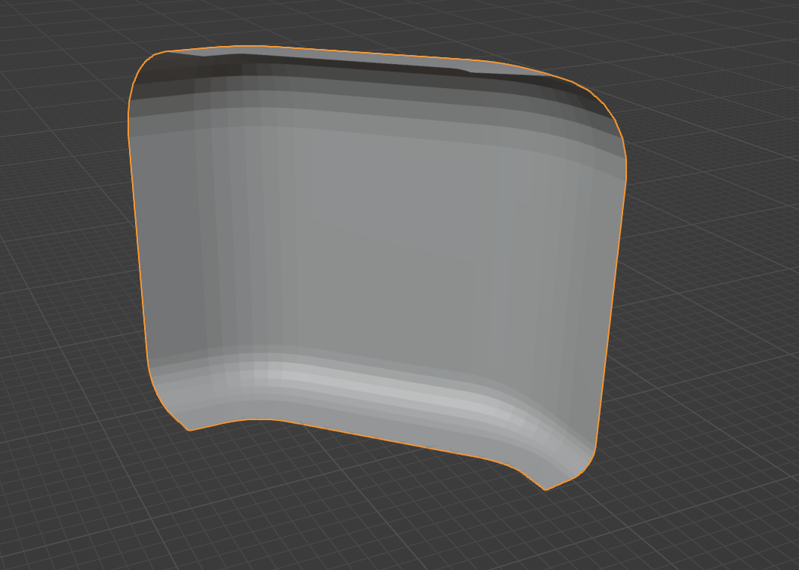
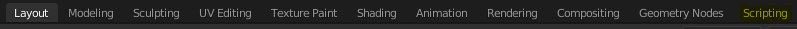
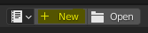
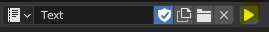
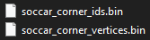

Extracting map meshes
Prerequisites
- 64-bit Windows
- Rocket League
- U-Model
- Blender 2.9+
- Blender .psk addon
Additional notes before getting started
This tutorial was tested on Blender 3.1.
Python knowledge is preferred for this tutorial, but you can get by without it.
Python does not need to be installed for this to work.
The resulting .bin files can be imported into any language that can read binary numbers from a file. The id files are a chain of 32-bit integers in little-endian format, and the vertices are stored at 3 32-bit floats in a row (x, y, z), also stored in little-endian format. Each ID in ids corresponds to the index of the vertex if you parsed the vertices in the order that they appear in the file. (By default.)
Overview
- Opening U-Model the right way
- How to identify a map
- Extracting a map
- Identifying collision files
- Importing to Blender
- Converting object to binary data
Opening U-Model the right way
Create a bat file called umodel.bat, and save this to it:
umodel.exe -game=rocketleague -path="C:\Program Files (x86)\Steam\steamapps\common\rocketleague\TAGame\CookedPCConsole"
Depending on where you saved U-Model, you may have to use cd before that to get to it:
cd C:\Program Files (x86)\umodel_win32
umodel.exe -game=rocketleague -path="C:\Program Files (x86)\Steam\steamapps\common\rocketleague\TAGame\CookedPCConsole"
Use this bat file that you create to launch U-Model whenever you need to use it.
If you have Rocket League install through Epic Games, use this path instead: C:\Program Files\Epic Games\rocketleague\TAGame\CookedPCConsole
WARNING: Be sure to use the 32-bit version of U-Model! You're safe as long as you don't change umodel.exe to umodel_64.exe. Some assets will refuse to load, if you do.
How to identify a map
In the top-left-ish corner, there's space for you to filter all the files. If you type in _P.upk, you will get a list of all of the maps.
If you're looking for a map, filter by MapImage. You can double-click on a file to view a preview of the map with a similar name. Press the key O (or go top left -> File -> Open package) to get back to the menu with all of the files.
Extracting a map
In this example, I will be using Stadium_P.upk - otherwise known as DFH Stadium.
Right-click on the map you want to export, click Export, and all of the map data will be extracted for you.
All files are extracted to the UmodelExport folder in whatever folder you saved U-Model to. For me, this is C:\Program Files (x86)\umodel_win32\UmodelExport.
Identifying collision files
Inside the folder of the map you extracted, there should be 5 more folders - the one that you want is called StaticMesh3. In this folder, simply look for any .pskx files that have the word collision in them. For DFH Stadium, there are 4 files:
* Goal_STD_Collision.pskx
* Field_STD_Collision_Corner.pskx
* Field_STD_Collision_SideTop.pskx
* Field_STD_Collision_SideBot.pskx
These files contain all of the available field collision information.
Importing to Blender
Open Blender, and select "General." This will load a default 3D scene, with a cube, light source, and camera.

Next, in the top right, delete all three of these things. (Right-click -> Delete)

Now, we import ONE of our objects. This is important - we can only convert one at a time unless changes are made to the script in the next section. When you want to convert another object, delete the only one in the scene first. The process is the same as deleting the cube, as we did previously.
To import an object, go to the top right -> Files -> Import -> Skeleton Mesh (.psk). Use this to import one of the .pskx collision files that we got earlier.

For this, I have imported DFH Stadium's Field_STD_Collision_Corner.pskx.

Converting the object to binary data
At the top of Blender, select the Scripting tab.
 In the top middle, select New.

Copy & paste the below Python script:
import bpy
# Blender Python API Documentation
# https://docs.blender.org/api/current/index.html
print()
if len(bpy.context.scene.objects) != 1:
print("MORE THAN ONE OBJECT EXISTS!")
exit()
obj_name = "soccar_corner"
data = bpy.context.scene.objects[0].data
ids = []
verts = []
for tri in data.polygons:
for id in tri.vertices:
ids.append(id)
for vert in data.vertices:
for coord in vert.co:
verts.append(coord)
print(f"Number of ids: {len(ids)}")
print(f"Number of triangles: {len(ids) / 3}")
print(f"Number of coordinates: {len(verts)}")
print(f"Number of vertices: {len(verts) / 3}")
import os
from pathlib import Path
os.chdir(Path.home() / "Documents")
#import json
#with open(obj_name + "_ids.json", "w") as f:
# json.dump(ids, f)
#print("Wrote json ids")
#with open(obj_name + "_vertices.json", "w") as f:
# json.dump(verts, f)
#
#print("Wrote json vertices")
import struct
with open(obj_name + "_ids.bin", "wb") as f:
f.write(struct.pack("<" + "i" * len(ids), *ids))
print("Wrote binary ids")
with open(obj_name + "_vertices.bin", "wb") as f:
f.write(struct.pack("<" + "f" * len(verts), *verts))
print("Wrote binary vertices")
You can edit the line obj_name = "soccar_corner" near the top to adjust the name of the outputted file, and os.chdir(Path.home() / "Documents") to edit the output folder.
Click on the Play/Run button in the top middle to run the script.

This creates the two bin files containing the ids and vertices from the object.

If you want an example of using collision data and compiling them into a mesh to run collision queries on, check out the rl_ball_sym Rust project: